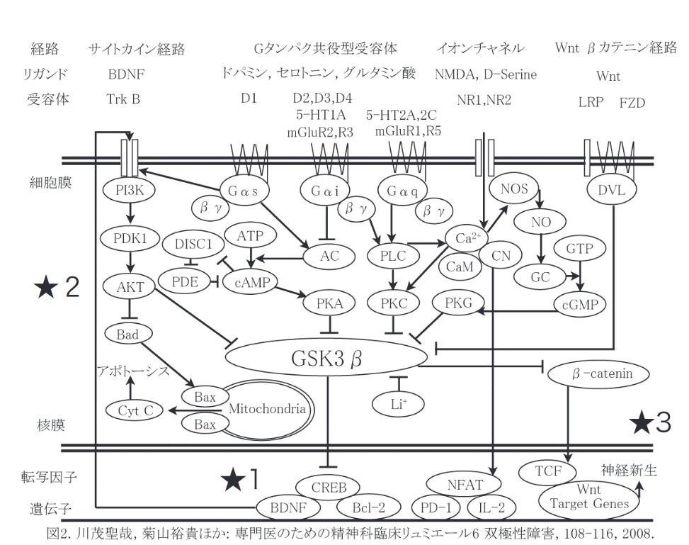
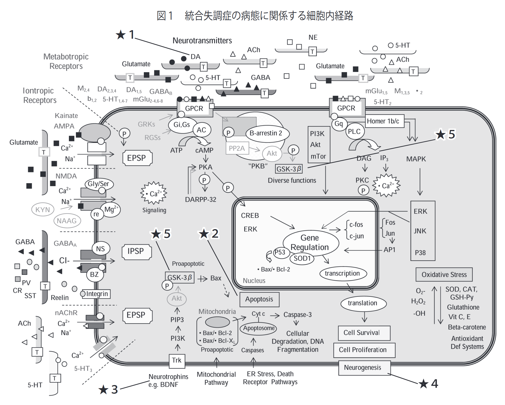
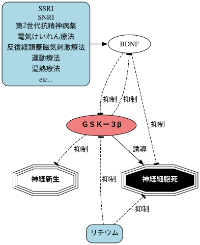

03 月 20 日 ( 木 )
抗うつ剤や向精神薬の働きについての図のこれ以上はない簡略化
一昨日の日記で下のような図を使って現在の精神科のお薬がどのように働くのか説明しました。

こんなの見てもわけわかんねーよ！！という声が聞こえてきそうです。わかります。でもこの図ですら自分の主治医が眉をひそめるくらい省略に省略を重ねた図なのです。
主治医に見せられた図の 1 つが下図になります。

これで説明を受けました。図と説明を見比べながら丁寧に追っていくと判るのですが、パッと見てまぁわかんないわけです。でも訪問看護の看護師さん曰く私の主治医は院内勉強会でこれ以上簡単にどう説明したらいいかわからないと宣っておられるようです。とは言えそれでもそれ以前に見せられた下図よりマシな訳です。

とはいえこの図ですら実際の脳の中で起きていることの 1/100 程度のことしか表現しておらず、実際はもっと複雑だそうです。ぶっちゃけ我々素人に理解できるはずがない！！
そんなこともあり、もう少し我々素人にも易しい図にならないかと思ってこさえた図が一昨日作成した最初の図になります。
最初の図でも素人である私達には簡単な図ではないし、お薬がどのように作用するのかを理解するには、これくらい限界まで省略した図でないと難しいよね？素人だしこれくらい省略して簡単にしてもかまわないよね？と思いながら作った図が下図になります。

これくらいまで省略してまとめると、お薬が BDNF や GSK-3β に作用して脳の萎縮を緩和したり修復するっていうことをザクっとグフっと理解しやすくなるのでは。もうこれ以上は省略できません。
- Category :
- #日記
- #blog
- #tag